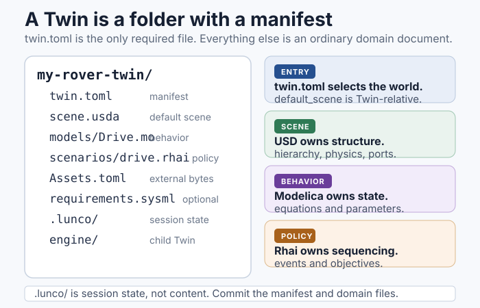

Twins¶
A Twin is a project folder for one engineered system: a lunar base, a rover test rig, a lander, a power subsystem, or a whole mission. It is the unit of saving, versioning, sharing, and opening in LunCoSim.
A folder becomes a Twin when it contains twin.toml. That manifest is the only
required file.


A minimal Twin¶
my-rover-twin/
├── twin.toml
├── scene.usda
├── models/
│ └── Drive.mo
├── scenarios/
│ └── drive.rhai
└── .lunco/ # session state, not project content
twin.toml declares the project name, version, entry scene, and search roots.
The other files are ordinary domain files:
| File | Role |
|---|---|
scene.usda |
The USD scene that becomes the active world |
models/Drive.mo |
A Modelica source file |
scenarios/drive.rhai |
A Rhai scenario or test policy |
.lunco/ |
Local session and workspace state; normally gitignored |
Standard files, tool-specific manifest¶
A Twin deliberately separates tool configuration from system modeling:
- USD owns geometry, composition, materials, physics, and connections.
- Modelica owns equations and continuous state.
- SysML v2 owns requirements and logical system structure, when the Twin uses them. See SysML v2.
- Rhai owns scenario and test policy.
- TOML owns tool configuration:
twin.tomlandAssets.toml.
The domain files stay in their standard syntax. A .mo file is still a normal
Modelica file, a .usda file is still normal USD, and a .sysml file is still
normal SysML. LunCoSim-specific configuration lives in twin.toml, so those
files remain usable in other tools.
File, folder, or Twin¶
LunCoSim supports three levels of structure:
| Mode | What you open | What you get |
|---|---|---|
| File | One .usda, .mo, or other document |
Edit that file; no project-level discovery |
| Folder | A folder without twin.toml |
Browse and edit files; no manifest, no Twin search roots |
| Twin | A folder with twin.toml |
Full project discovery, default scene, libraries, and Twin settings |
You can promote a folder to a Twin at any time by adding a twin.toml or by
using Save as Twin…. The files do not move.
The manifest is read at open¶
The manifest is not watched for structural changes. If you edit
default_scene, the Modelica source roots, or the SysML roots, reopen the Twin
before expecting the change to take effect. The parser rejects unknown fields,
so a typo fails visibly instead of being silently ignored.
The [settings] table is different: it is a live, namespaced scalar map that
Rhai and the Twin settings panel can read and write. See
twin.toml for the field reference.
Nested Twins¶
A Twin can compose child Twins:
Opening the parent loads local children eagerly. A child can be a complete project in its own right, which is useful for an engine, a comm stack, or a science payload that is also developed separately.
Remote URL children are reserved for future remote-Twin support; they are listed in the manifest but are not followed today.
Lifecycle¶
Opening and closing a Twin is a real lifecycle boundary. When a Twin closes, its documents, Modelica participants, scripts, timelines, and scene-owned state are retired before another Twin can use those names. If you switch projects, expect a fresh load rather than a reuse of the previous session's state.
This is why a Twin is a better unit than a loose collection of tabs: the project owns its resources and can shut them down as one system.
The boundary also applies to runtime UI. A Twin can provide its own presentation manifest; closing the Twin restores the shared application surfaces. See Runtime UI.
Create or open a Twin¶
- File → New Twin… creates a manifest and opens the new project.
- File → Open Twin… opens an existing folder with
twin.toml. - Save as Twin… promotes the current document or scene into a new project folder.
Once the Twin is open, the Twin panel shows its files. The declared default scene is loaded into the viewport; other USD files remain a referenceable asset library until a scene references them.
What belongs in the project¶
A Twin should contain the files that define the system and the policy that travels with it. A useful test is: if a colleague opened this folder on another machine, would they need this file to reproduce the authored system?
| Belongs in the Twin | Does not belong in the Twin |
|---|---|
| USD scenes, assemblies, and variants | Downloaded cache bytes |
| Modelica sources and package structure | Generated solver artifacts |
| Rhai scenarios, tutorials, and tests | Screenshots and scratch recordings |
Assets.toml declarations |
Absolute machine paths |
twin.toml and project settings |
User-global preferences |
| SysML requirements and verification mappings | Secrets or private tokens |
External bytes are declared, not copied. Use Assets.toml to name the source,
destination, and optional hash. The asset system resolves the logical address
to the local cache.
Sharing a Twin¶
A Twin is an ordinary folder. You can version it with Git, zip it, or hand it to a colleague. Before sharing:
- Remove local session state and any large generated artifacts.
- Confirm that every external asset is declared in
Assets.toml. - Confirm that the default scene opens on a clean machine.
- Run the authored validation and scene test.
- Record the LunCoSim build and any reference data used for an accuracy claim.
The Validate and share tutorial walks through the complete handoff.
Related sections¶
- twin.toml — the manifest reference
- Assets.toml — external asset declarations
- Create a Twin — a hands-on walkthrough
- How it fits together — the layer boundaries
- Runtime UI — Twin-owned presentation assets